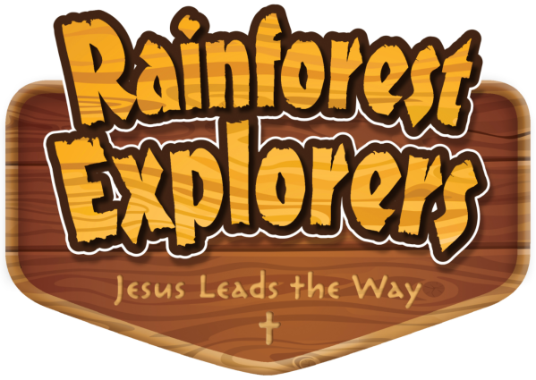

Rainforest Explorers: Jesus Leads the Way!
August 8–12, 2022
9am - noon
Registration
Payment Options
The cost for registration is $25 and can be made
- By e-transfer: etransfer@princeofpeaceregina.ca
If choosing this option, you MUST include the names of all children you are paying for in the message area
- In person: 935 McCarthy Blvd North
If choosing this option, you MUST arrive between the hours of 9 AM - Noon, Monday – Friday
For more information, please contact Sandra Hayward @ 306-543-9898 or poplc@sasktel.net
Resources